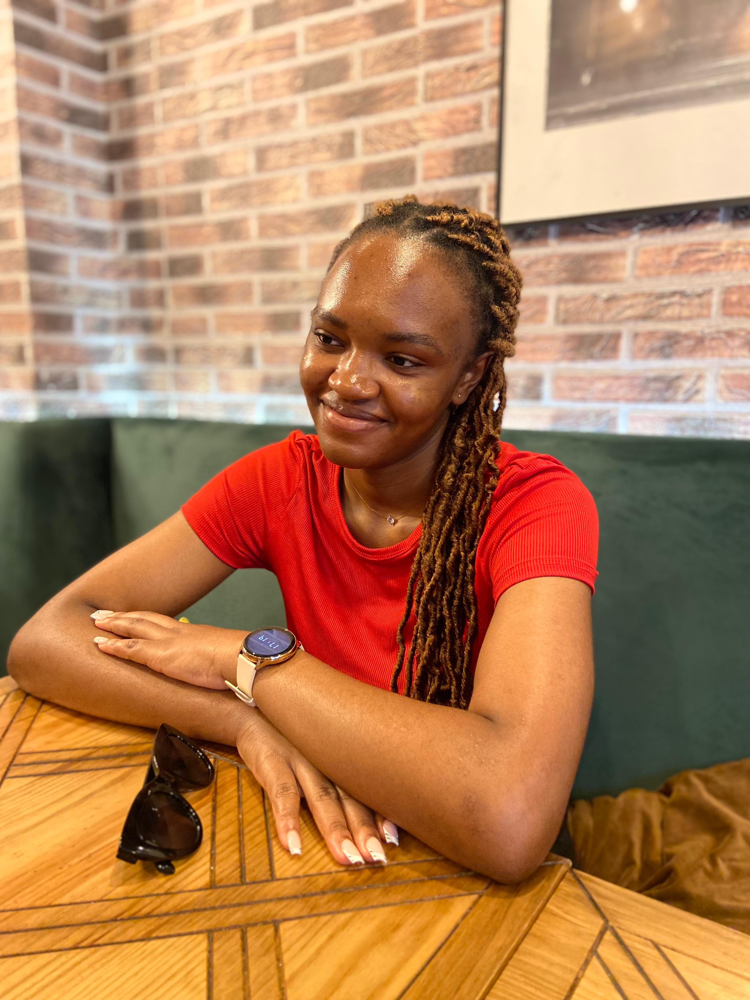

My name is Chrislie Briel Mohomye Yotchouen, born and raised in Bafang, Cameroon. I am the proud sibling of two brothers and two sisters. My formative years were spent in Bafang, where I cultivated a strong sense of community and family values, both of which have become integral to who I am today. Naturally curious and always eager to explore new horizons, I have cultivated a passion for personal growth through diverse experiences. Whether spending time with friends, traveling, cooking, baking, or seeking out new adventures, I embrace every opportunity to learn and expand my understanding of the world. Through my journey from Cameroon to Germany, from learning languages to embracing different cultures, I remain committed to personal growth, the pursuit of knowledge, and the connections that bind us all as a global community. I am excited for what the future holds as I continue to explore new opportunities and experiences.
Upon completion of the General Certificate of Education (GCE) Advanced Level, I relocated to Yaounde, Cameroon's vibrant capital, to pursue further academic studies. This transition presented an invaluable opportunity to expand my educational horizons. It was during this period that I made the strategic decision to enroll in German language courses at the esteemed Goethe-Institut. Learning German not only improved my linguistic abilities but also deepened my appreciation for German culture, providing insight into a world beyond my immediate surroundings.
In March 2021, I commenced the next significant phase of my life by relocating to Germany to pursue further studies. This transition marked a transformative moment, as it allowed me to immerse myself in a new culture and experience different perspectives. Living in Germany has expanded my personal and intellectual horizons, providing me with valuable insights that have been pivotal in shaping my worldview and future aspirations. The combination of academic development and cultural immersion has played a central role in my growth, equipping me with a global mindset and a deeper understanding of the world.
Traveling is a deep passion of mine, and I take every opportunity to explore new countries and immerse myself in the diverse cultures that make up our world. Whether I am strolling through bustling city streets, hiking in remote landscapes, or visiting historical landmarks, every trip contributes to my understanding of the world. Traveling not only broadens my horizons, but also helps me grow personally as I learn to adapt to new environments, languages, and customs. Through these experiences, I continually gain a richer understanding of humanity and an appreciation for the diversity that defines us. Meeting people from different walks of life has allowed me to see the world from different perspectives, fostering empathy and openness that I bring to my everyday life.
In my leisure time, I pursue my interest in cooking and baking, two activities that allow me to express my creativity and bring joy to those around me. Experimenting with new recipes, particularly from the countries I've visited, enables me to bring a piece of my travels home. From trying out exotic spices to perfecting classic dishes, cooking is both a relaxing and rewarding experience for me. Baking, on the other hand, allows me to satisfy my sweet tooth while providing a sense of accomplishment, especially when I share the results with family and friends.
As a dedicated Computer Science student, I have been building a solid foundation in key programming languages, including:
While I have gained a solid understanding of these areas, I am fully aware of the importance of continuous learning and growth. I am eager to deepen my expertise in these technologies and explore new tools and methodologies in the ever-evolving field of computer science. My goal is to apply my current knowledge while remaining open to new learning opportunities that will allow me to effectively contribute to a professional environment.
In addition to my programming skills, I have also developed proficiency in various collaboration and project management tools that enhance my ability to work effectively in team settings. My experience includes:
These tools have equipped me with the skills necessary to manage projects efficiently and communicate effectively with team members. I am committed to leveraging these skills to contribute positively to collaborative efforts in the tech industry.

A program to manage an inventory developed with Java

A chatbot developed by my team and I at the university for a project in automated software development
My personal website